Embodied System – Sensing the digital
1 · Concept and Early Exploration
1.1 Concept Development
See project plan: Project Plan
1.2 First Technical Setup – Hardware and Software Decisions
First Motion Data Tracking: PoseNet / Mediapipe
For the initial technical setup, I worked with PoseNet, a TouchDesigner component that uses AI to generate skeletal data from camera images. Unlike Kinect V2, which is only compatible with Windows and has to be connected as an external device, PoseNet allowed me to experiment with motion data directly from my laptop camera and independently of the operating system. However, it was never intended to represent the final technical result.
PoseNet mainly helped me to explore the workflow and get a first understanding of how tracked motion data could be processed and later mapped to sound.
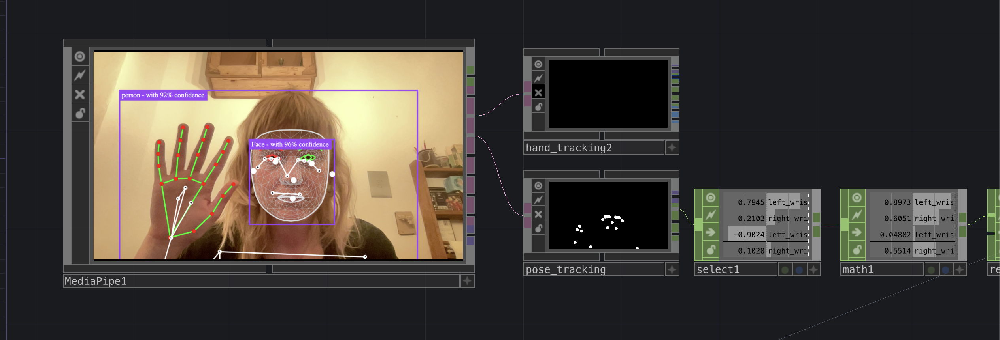
- Setting up the PoseNet pipeline
- Selecting first parameters
- First experiments with selected data such as joints, speed, and body relations
- Limited reliability – PoseNet was useful for early exploration, but not stable enough for a performance context. The tracking quality depended strongly on camera angle and image quality.
- CPU overload and OSC clipping – Running TouchDesigner and Ableton on the same laptop caused performance issues. Audio playback became unstable and clipping occurred.
- PoseNet is a good tool for exploration, but not for the final setup
- I got a first feeling for the relationship between camera perspective and skeleton data
- Even early prototypes need to be tested under real-time conditions
- TDPackage: sending values from TouchDesigner to Ableton
DAC: Max/MSP or Ableton Live?
At the beginning, I considered working with Max/MSP, because it is specifically designed for real-time processes. While researching motion data and sound, I found a tutorial demonstrating how motion data can be sent to Ableton Live in real time using Kinect and then mapped to any given parameter.
Since I had no previous experience with Max/MSP, I decided to work with TouchDesigner and Ableton Live instead.
Movement Controlled Instruments – TouchDesigner, Ableton Live and Kinect


The TDAbleton package works through Ableton's MIDI Remote Scripts system and allows two-way communication between TouchDesigner and Ableton via OSC. This was a workflow I was not familiar with at the time.
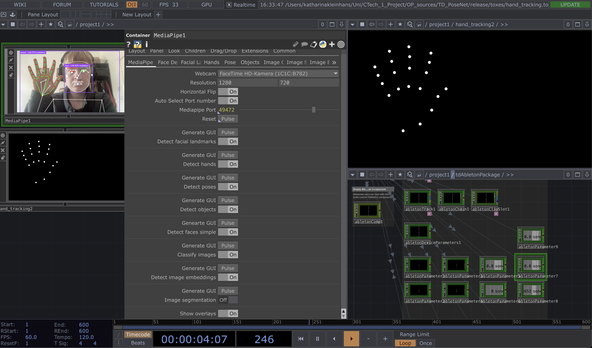
- Researching possible audio environments
- Comparing Max/MSP and Ableton Live
- Deciding on the TouchDesigner + Ableton workflow
- Starting to understand TDAbleton and OSC communication
- Unfamiliar workflow – No previous experience with TDAbleton or Ableton's MIDI Remote Script logic, making the setup process slower and more trial-and-error based.
- Persistent audio clipping – Even after adjusting technical settings, clipping problems continued. The system remained unstable when both programs ran on one machine.
- Increasing the buffer size in Ableton settings
- Decreasing the sample rate in Ableton settings
- Reducing the frame rate in TouchDesigner
- Using Resample CHOPs
- Turning on reduced latency when monitoring was off
- Getting familiar with the PoseNet plugin and its values
- Understanding the general workflow between TouchDesigner and Ableton
- Recognizing early that real-time audio systems are very sensitive to performance issues
1.3 First Sound Experiments
A large part of my process involved experimenting with and learning sound production in Ableton Live. Regarding my concept of transferring mental states into sound, I started experimenting without setting strict limits for myself, trying instead to find atmospheres that could express my conceptual idea.
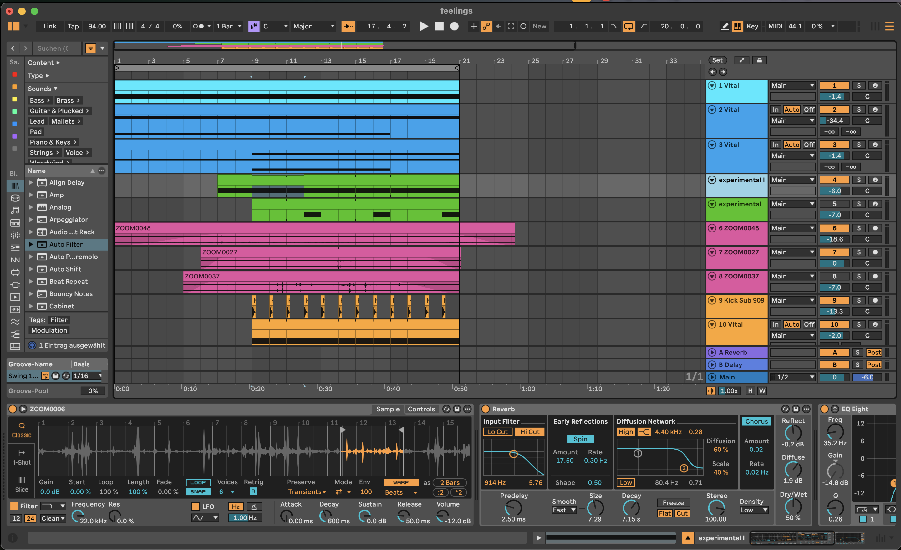
- Too many possibilities – I often got lost in sound exploration. It was difficult to decide which sounds were conceptually strong and which were just interesting on their own.
- Lack of clarity – Layering too many sounds made the connection between body and sound less readable.
- Narrative overload – At first, I was still trying to think in terms of linear narration, which distracted me from building a system that worked performatively.
- Further steps in sound production and synthesis
- Getting a first feeling for which parameters work for mappings
- Clarity is more important than sonic complexity in an interactive system
Vital Synthesizer
At the beginning, I focused especially on creating low-frequency tracks with the Vital synthesizer plugin. Since my initial idea was that the height of the body should change frequency levels, I wanted to start with simple drone sounds.
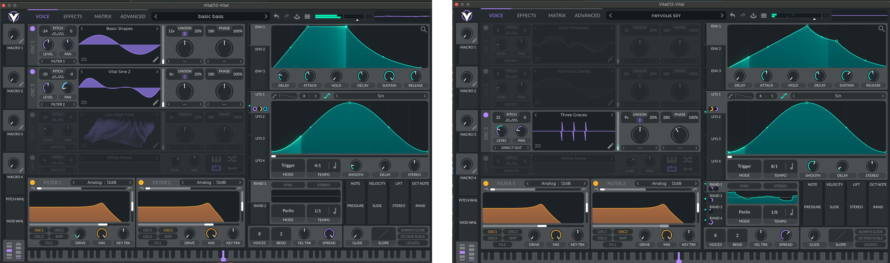
- Pitch mapping sounded strange – Using pitch as a directly changing parameter often sounded unnatural and distracting.
- Too much movement inside the sound itself – Strong oscillator movement could compete with the body–sound relation.
- Becoming familiar with the plugin and its oscillator parameters
- Configuring instruments in Ableton Live
- Understanding that filter changes often work better than direct pitch mapping
2 · Testing and Technical Reorientation
2.1 First User Test – 04.02. with the Acting Class
As part of the movement project with Prof. Lara Martelli Hisleiter's acting class, I had the opportunity to test the initial technical setup with other CTech students from higher semesters.
Test File – Three Values
1. General body height (bodyheight) – Selecting the y-position of nose / head / shoulder from the Kinect CHOP
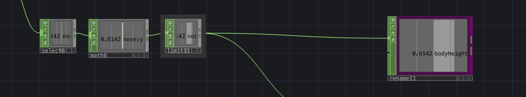
2. Distance between hands (distance) – Subtracting the position data of the right hand from the position data of the left hand
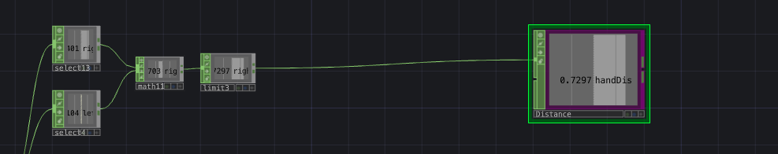
3. Speed of the body (speed) – Calculating the average of the x, y, z position values of the shoulders and hips to determine a value for the center of the body. The Slope CHOP then analyzes the speed.
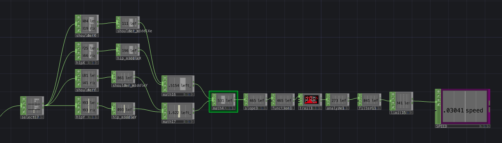
Data Visualization
To make the behaviour of the values recognizable and comprehensible, I supplemented the file with a visualization of the data.
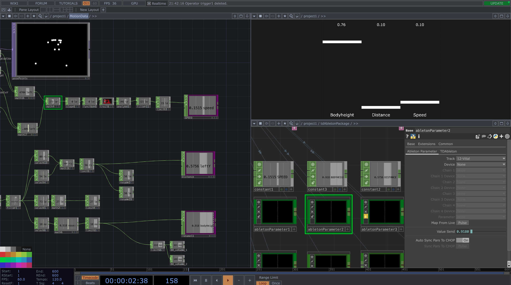
- Audio clipping – CPU overload caused clipping, interrupting the test situation.
- Unstable absolute values – Values varied strongly depending on body position and camera relation.
- Tracking limitations – Kinect V2 was more accurate than PoseNet, but overlap, turning, or leaving the ideal camera area could disturb skeleton data.
- Using two laptops to run Ableton Live and TouchDesigner separately via OSC
- Normalizing values in real time with Trail and Analyze CHOPs
- Motion data values are hard to control
- Kinect V2 is not always reliable
- Values need normalization and limits
- Performer movement in space strongly affects the data if the system relies on absolute values
2.2 Calibration System & Data Normalization
After testing with the acting class, I had to take a few steps back and ask myself some fundamental technical questions: How can I interpret movement data cleanly and reliably? How can I prevent uncontrolled jumps in values when tracking is lost? How can I normalize the values I receive from the Kinect?
Youtube Tutorial: How to Quickly Calibrate Sensor Data in TouchDesigner
I used this method as a starting point for building a calibration system in TouchDesigner. The idea was to make the data more controllable through automatic normalization independent of room size / body height.
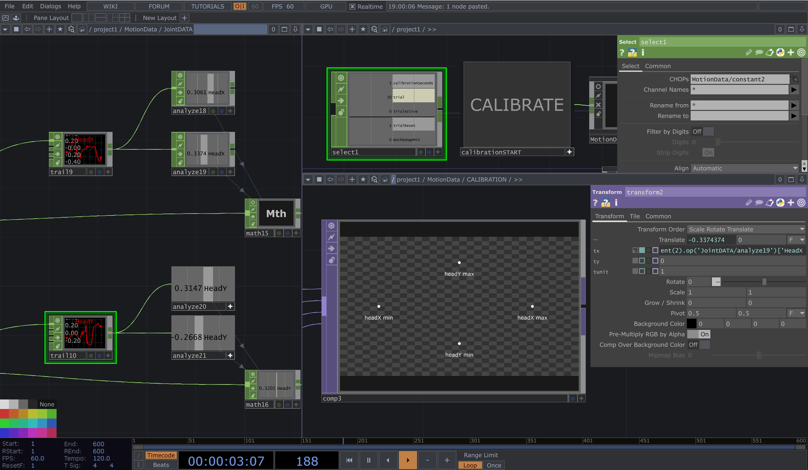
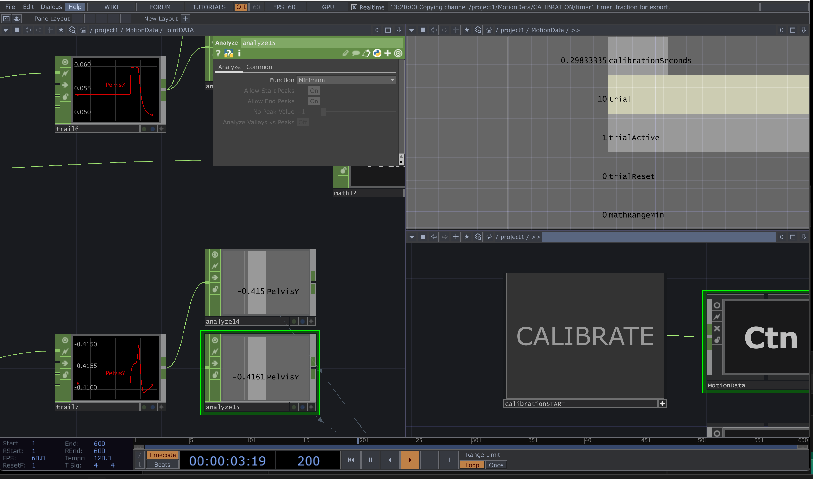
- Limited flexibility – Calibration was initially only prepared for specific joints.
- Confusing visualization – The calibration view became visually confusing.
- Calibration as additional complexity – Instead of simplifying the setup, calibration added another technical layer.
- Understanding ways of data normalization with Trail and Analyze CHOPs in TouchDesigner
- Building dynamic CHOP node setups with Python references
- Realizing that a technically possible solution is not always a performatively useful one
2.3 Second Test – 04.03. with Riccardo in the Theater Hall
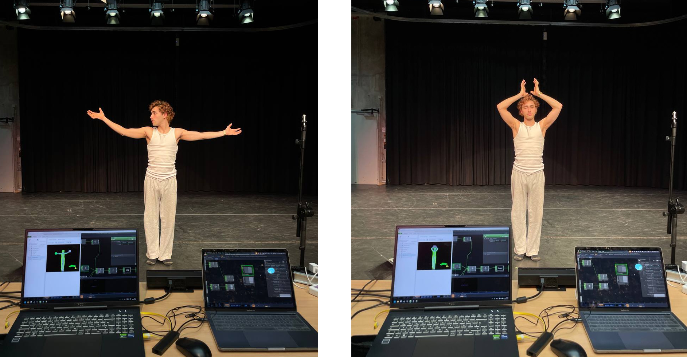
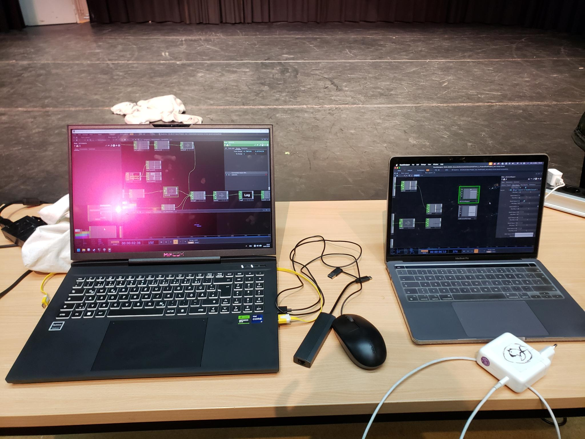
- Calibration did not solve the core issue – If the performer moved away from the camera, body height was still measured in relation to camera perspective.
- Constant recalibration created confusion – The calibration had to be updated constantly, making the relationship between movement and sound dependent on previous movements.
- Axis-based calculations remained unstable – Values based on separate x, y, z coordinates caused problems when the performer moved or rotated between axes.
- Sound design was still too dense – Some sound layers were too complex or too active on their own.
- Use relative data instead of absolute data
- Work with simple and clear relations between body parts and sound
- Latency is significant for the authenticity and traceability of the movement–sound relationship
2.4 Data Refinements and Concept Changes
Concept Changes
This phase marked an important conceptual shift: new focus on Body – Movement – Relation instead of Body – Space Relation. The relationship between performer and space should arise through the interaction of the performer with their own body, not mainly through absolute position in the room.
Clear Parameters
Riccardo and I talked about which parameters felt interesting to explore on stage. At this point I reduced the setup to a smaller number of central mappings:
- Volume / low-pass filter: body height
- Hand–head distance: volume + speed / interval
- Trigger: samples played when holding above a threshold over time
- Speed of body
Euclidean Distance
Research: Euclidean distance · Free Source: Distance Calculator
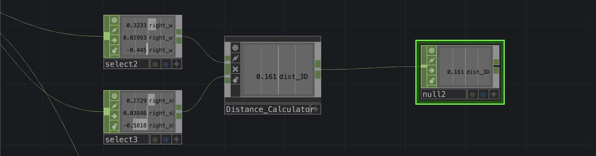
Second Approach: Relative Data
At this point I came to the conclusion: calibration = chaos. Absolute data is not controllable, because it depends too much on camera perspective and the distance between sensor and body. Relative data places the performer more clearly at the center of the performance.
This included values such as head–hand distance, hand–hand distance, body speed, and relation to the body center.
This step was one of the most important decisions in the whole project, because it fundamentally improved both reliability and performability.
2.5 Third Test – 06.03. with Riccardo in the Theater Hall
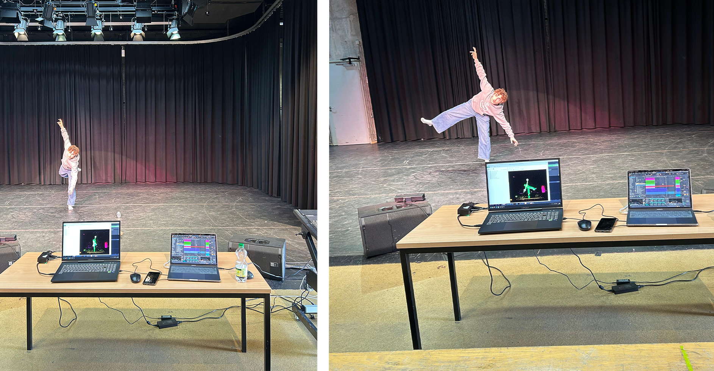
- Tempo mapping remained difficult – It was not clear whether the tempo of a sample could be mapped in a musically meaningful way through motion.
- MIDI mapping questions remained open – Still needed to clarify how to best trigger or shape events via MIDI.
- Testing is better than assuming
- Use filter mappings for frequency changes instead of direct pitch mappings
- Relative data clearly improved the interaction quality
TDAbleton Research
Relevant parameter categories at this point: velocity of a joint, acceleration / impulse / sudden movement, distance to body center, verticality (y-position), area / expansion (distance between hands).
Open technical question: In Ableton, directly changing global tempo in a musically useful way was not possible within my setup. Possible workarounds considered: plugin-based solution, Max for Live, or building a synthetic heartbeat instead of controlling the master tempo directly.
3 · Final System Development
3.1 Dynamic Workflow and Built Pipeline
In the final phase of the project, I was able to work on the overall musical composition using the pipeline I had built and the Kinect recordings from the tests. At this point, I finally had a setup that enabled a dynamic and experimental workflow for refining the idea. This was the phase in which the project started to feel like a coherent system rather than a collection of separate experiments.
The pipeline consisted of: Kinect recordings of Riccardo from the test runs → selected value calculations in TouchDesigner → data flow to Ableton → various tracks, samples, and sound layers in Ableton.
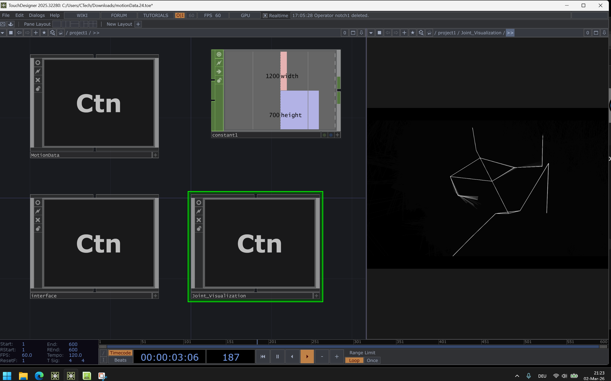
A central question during this phase was: How do the sound layers really work together when they are continuously shifting through tracking? This led me again to the decision to reduce and simplify: fewer layers, clearer relations, stronger readability for performer and audience.
3.2 Sound Design – Reorientation & Reduction
Feedback from Riccardo: clearer sounds, more concrete assignments, less oscillation.
The main problem was clear assignment. It was often not readable enough which movement caused which changes, because too many layers ran simultaneously, too much internal movement already existed inside the sounds, and tracking changed several parameters continuously.
New Sound Arrangement
| Layer | Bodily Dimension | Sonic Role |
|---|---|---|
| Ground Layer | grounding / vertical presence | sonic foundation |
| Atmosphere Layer | openness / spatial expansion | harmonic environment |
| Inner Body Layer | internal bodily processes | intimate internal sounds |
| Event Layer | energetic gestures | triggered sound events |
Ground Layer – Low-frequency drone; forms the sonic foundation of the system; creates a sense of weight and stability; represents the body's relation to gravity; slow, continuous layer rather than reactive gesture sounds.
Atmosphere Layer – Harmonic / tonal textures; creates the surrounding sound environment; introduces width and spatial depth; in-/decreasing panning.
Inner Body Layer – Intimate sound elements; breathing, pulse, internal movement; quieter layer compared to the outer sound layers.
Event Layer – Short, discrete sound events; appear momentarily within the soundscape; contrast to the continuous layers; sonic accents for energetic or expressive gestures.
| Before | After | |
|---|---|---|
| Many overlapping layers | → | Fewer layers |
| Blurred interaction | → | Clearer mapping |
| Motion-to-sound relation too dense | → | Clearer distinction between continuous layers and triggered events |
| Internal movement inside sound tracks | → | Reduced oscillation and modulation |
- Clear layer roles improve the readability of the interaction
- Reduction can make the interaction more expressive
- Structural clarity is as important as sound design
3.3 Parameter Extensions & Python Scripts
During the refinement workflow, I got additional ideas for more concrete and conditional parameter calculations: closed arms over the body, closed arms in front of the chest, arm speed → triggers sample.
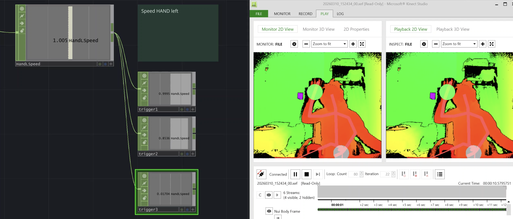
- Working with CHOP Execute DAT
- Writing simple Python scripts
- A stable pipeline enables artistic refinement
- Reduction is not a limitation, but a design decision
- Technical organization is part of the creative workflow
3.4 MIDI Trigger Connection (10.03.)
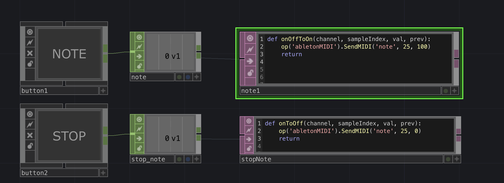
- Connecting TouchDesigner to Ableton Live via MIDI / OSC using TDAbleton
- Using trigger channels to activate a CHOP Execute DAT
- Implementing Python scripts to send MIDI notes:
SendMIDI('note', note, velocity) - Testing triggers for start, stop, and stop all sound events in Ableton
- Python syntax errors – Small mistakes such as
po()instead ofop()prevented the triggers from working. - Callback confusion – Initially unclear which CHOP Execute DAT callbacks were needed (
onOffToOn,onOnToOff). - Abrupt sound endings – Triggered sounds stopped too suddenly when the trigger ended.
- TouchDesigner triggers can reliably control external audio via MIDI
- CHOP Execute DAT callbacks translate data events into scripted actions
- Proper envelope / release settings in Ableton help avoid abrupt sound endings
- Debugging Python scripts carefully is essential for real-time interactivity
3.5 Gesture Detection Setup
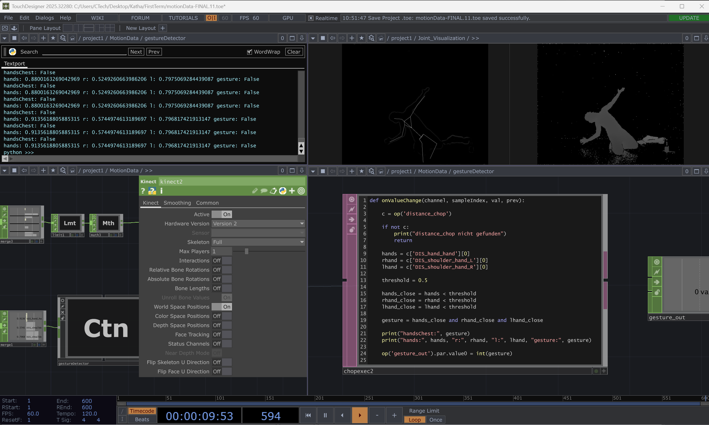
Implemented gestures included hands on chest, hands above head and crouch / low torso.
- Importing and organizing body-tracking channels in a CHOP network
- Creating a CHOP Execute DAT to access channel values with Python
- Reading key parameters: hand-to-hand distance, hand-to-head distance, hand-to-chest distance, torso height, hand positions relative to head, shoulder rotation, pelvis shift, overall body velocity
- Defining thresholds for different gestures
- Converting gestures into binary outputs and forwarding to gesture_out CHOP
- Technical fragility – Python callbacks only triggered with the correct input CHOP and settings.
- Strict naming dependencies – Channel names had to exactly match the tracking data.
- Threshold instability – Continuous values fluctuated strongly; gesture recognition flickered if thresholds were too sensitive.
- Relative body relations are more reliable than absolute coordinates
- Separating gestures into a dedicated CHOP simplifies reuse in the system
- Combining distance, height, and velocity improves gesture robustness
- Threshold tuning is critical to avoid flickering states
3.6 Stillness Detection (14.03.)
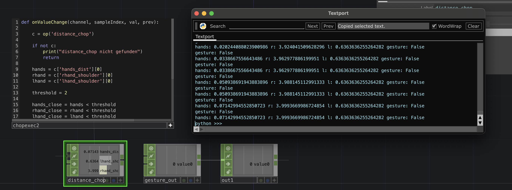
- Using the
SPEED_bodychannel from the tracking data as an overall movement measure - Smoothing the velocity with a Filter CHOP
- Applying a Logic CHOP with a velocity threshold (
< 0.2) to detect stillness - Using a Count CHOP to ensure a minimum duration of approximately 30 frames for intentional stillness
- Outputting the result as the binary signal
gesture_still
- Noise in low-movement states – Even very small fluctuations remain in the data; without smoothing, false detections occurred easily.
- Need for temporal stability – A single threshold was not enough; the system needed a minimum duration so that stillness would be recognized as intentional.
- Stillness is not simply the absence of movement; it has to be technically stabilized
- Smoothing and duration thresholds are necessary to distinguish intentional stillness from noise
- Subtle gestures often require more care than larger movements
4 · Key Development Insights
- Relative data works better than absolute data. Absolute coordinates depended too strongly on camera perspective, room setup, and performer position. Relative relations between body parts were much more stable and intuitive.
- Reduction improves clarity. Too many mappings and too many sound layers made the interaction harder to understand. A smaller number of clearly defined relations worked better artistically and technically.
- Testing with performers is essential. Important decisions only became obvious through practical testing, especially through feedback from Riccardo.
- Technical stability shapes artistic quality. Problems such as clipping, latency, unstable values, or threshold flickering were not only technical issues; they directly affected the performative quality of the system.
- The final system emerged through rethinking, not just refining. One of the most important shifts in the project was the decision to move from calibration and absolute data toward a system based on relative body relations.
5 · Project Categorization
Creative / Artistic Development
A central part of my result is the creative and artistic development of a body-driven sound instrument. The project developed from a rather open conceptual idea about dramaturgy, emotional states, and bodily presence into a performative system in which movement, posture, and gesture continuously shape a layered sound environment.
An important artistic development was the shift from thinking about the body mainly in relation to space toward thinking about the body in relation to itself.
Narrative Development
The project does not follow a classical linear narrative but narration emerges through conditions, states, and transformations. The narrative development took place through the idea of a dramaturgical landscape in which different emotional or physical states can be explored rather than narrated explicitly.
Audio-Visual Design
The main focus of the project was audio design. On the audio side, I developed a layered sound environment consisting of drones, rhythmic elements, breathing-like textures, and triggered samples. A key design decision was to reduce the complexity of the sound layers in order to make the body–sound relationship more legible.
Software Development
Not direct software development, but in the sense that I had to communicate across different software systems in a very interdisciplinary way. I worked with TouchDesigner, Ableton Live, TDAbleton, Python inside TouchDesigner, and OSC / MIDI communication.
Hardware and Pipeline Development
The hardware setup strongly influenced the project, especially in relation to CPU overload, tracking reliability, and latency. I worked with a laptop camera during early exploration, Kinect V2 as the main tracking sensor, a two-laptop setup for separating TouchDesigner and Ableton, and OSC / MIDI communication between systems.
Algorithms
Algorithmic aspects of the project included motion parameter calculations and threshold-based gesture recognition.
Research / Experimentation
Research and experimentation were core to the entire process. The project developed iteratively through cycles of testing, failure, revision, and refinement — covering motion tracking tools, calibration and normalization methods, mappings between movement and sound, and integration of performer feedback.
6 · Reflection
Reflection on Technical Choices
The three most important decisions I made during my process:
- Technical setup components – The decision regarding the technical components of my setup stemmed from my interest in Ableton Live, my existing familiarity with TouchDesigner, and the accessibility of the Kinect V2. Even though the setup still has room for improvement in terms of reliability, it served its purpose of allowing me to explore the interplay between sound and physical movement within a realistically feasible framework.
- Shifting my focus to relative motion data
- Streamlining my sound concept – The shift to relative data and the simplification of the sound concept resulted particularly from my collaboration with Riccardo as he tested the setup on stage. His feedback helped me develop a sense of which parameters were truly crucial, interesting, and effective. Instead of becoming too deeply entangled in a concept, next time I would view the process more as an integrative and open-ended one.
Minimal Viable Product and Best-Case Scenario
Best-case scenario from project plan:
- To develop not only linear input–output relation
- Spatial sound environment with dramaturgical structures
- Dramaturgy concept for the sound – space – time relations, not linear but conditional
Minimal viable product:
- To develop a functioning technical setup
- To develop a workflow between motion data and sound parameter
- To develop a sound concept as a creative research: at least three soundscapes associated with corresponding emotions, movements, and/or states
At the end of this project, I am closer to the minimal version than to the best-case scenario. I have created a functioning technical setup with five different parameters and developed a functioning workflow between tracking, data processing, and sound over the course of the project.
What I did not manage to achieve within the time frame was a conditional dramaturgy and a comprehensive sound concept with regard to conveying different emotions.
However, in the course of the process, I increasingly noticed two things: the processing of movement data is complex and requires a broader examination than I had initially estimated; and a spatial soundscape is not really necessary for the intention of my project, as the legibility of the movement–sound relationship on stage works very well when the sound scene is minimal.
Even though I was frustrated at times, looking back on the process now, I realize that I learned a great deal. Working with Riccardo in particular brought inspiration and flexibility to the concept. The experience of this collaboration opened my eyes to how my work can develop collaboratively and what is really interesting from the perspective of the person on stage.
Challenge of your Comfort Zone
Interacting with other students, even though I didn't feel confident about my work yet, was itself a challenge. Both components — sound and motion tracking — were new to me in this dimension and sometimes challenged me greatly.
I learned: Understanding of motion data processing · How to use and control the data · Real-time interaction between Ableton Live and TouchDesigner · Working with actors · Further steps in sound production · Working with OSC connections
This challenged me: Gaining control over motion data · Producing tracks that truly captured my idea of the different emotional stages · Not losing myself in the potential of sound production · Testing my setup with other students, even though it wasn't final yet
Reflection on Original Work Plan and Timeline
As already mentioned, my focus shifted from the artistic concept to the technical aspects during the process. Through user testing with the actors, I realized that handling motion data requires much more attention than I had planned for. Unfortunately, my planning was also generally unrealistic in terms of time with regard to other projects.